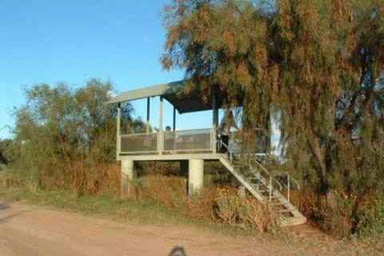

PHONE
PHONE GET DIRECTIONS
GET DIRECTIONS-

- 
OPENING HOURS: Not applicable.
COORDINATES: 30º52'48.23"S, 147º41'50.47"E
LOCATION: The viewing platform is on Gibson's Way, the road that links the Carinda Road (near Willie Retreat - see under River bedz) and Quambone. If travelling from Warren, take the road to Carinda for just over 100kms and turn right at the Telstra tower into Gibson's Way. Note - Gibson's Way is unsealed and not suitable for other than 4WD after rains. It is strongly recommended you get local advice before proceeding to the viewing platform as when there is water in the Macquarie marshes there are several places it crosses this road and may make it impassable even if you have 4WD. The black floodplain soils are easy to get bogged in!